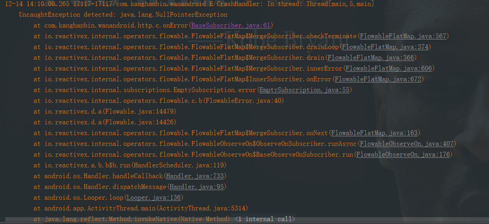

问题
今天再给项目配置混淆打release包时，遇到了个很尴尬的问题，项目打正式包下奔溃，打测试包正常运行。下面是打包配置（app下的build.gradle），关于为什么要proguard应用程序，请看这篇文章为什么每个人都应该将ProGuard用于他们的Android应用程序
android {
compileSdkVersion rootProject.ext.android.compileSdkVersion
defaultConfig {
applicationId "com.kanghanbin.wanandroid"
minSdkVersion rootProject.ext.android.minSdkVersion
targetSdkVersion rootProject.ext.android.targetSdkVersion
versionName rootProject.ext.android.versionName
testInstrumentationRunner "android.support.test.runner.AndroidJUnitRunner"
ndk {
// 设置支持的SO库架构
abiFilters 'armeabi', 'x86', 'armeabi-v7a', 'x86_64', 'arm64-v8a'
}
}
signingConfigs {
release {
//RELEASE_KEY_ALIAS等常量放在gradle.properties文件中
keyAlias RELEASE_KEY_ALIAS
keyPassword RELEASE_KEY_PASSWORD
storeFile file(RELEASE_STORE_FILE)
storePassword RELEASE_STORE_PASSWORD
}
}
buildTypes {
release {
minifyEnabled true
shrinkResources true // 自动清理无用资源
proguardFiles getDefaultProguardFile('proguard-android.txt'), 'proguard-rules.pro'
signingConfig signingConfigs.release
}
debug {
signingConfig signingConfigs.release
minifyEnabled false
proguardFiles getDefaultProguardFile('proguard-android.txt'), 'proguard-rules.pro'
}
}
//只需禁用lint警告。有时应用不会发布到Google Play，因此不需要深层链接等：
lintOptions {
disable 'GoogleAppIndexingWarning'
baseline file("lint-baseline.xml")
checkReleaseBuilds false
abortOnError false
}
}
然后我就将buildType为debug时的minifyEnabled 也改为true，在手机上调试
debug {
signingConfig signingConfigs.release
minifyEnabled true
proguardFiles getDefaultProguardFile('proguard-android.txt'), 'proguard-rules.pro'
}
不出意外，来了个NPE
定位错误是在BaseSubscriber的61行代码报错
if (((ApiException) t).getCode() == Constant.UN_LOGIN
|| t.getMessage().equals(Constant.UN_LOGIN_MESSAGE)) {
mView.startLoginActivity();
}
mView.showToast(t.getMessage());
发现就是t.getmessage为空然后我就多加了个判断，BaseSubscriber类的完整代码如下
public abstract class BaseSubscriber<T> extends ResourceSubscriber<T> {
private BaseView mView;
private String mErrorMsg = "";
private boolean isShowErrorState = true;
public BaseSubscriber(BaseView mView) {
this.mView = mView;
}
public BaseSubscriber(BaseView mView, boolean isShowErrorState) {
this.mView = mView;
this.isShowErrorState = isShowErrorState;
}
public BaseSubscriber(BaseView mView, String mErrorMsg) {
this.mView = mView;
this.mErrorMsg = mErrorMsg;
}
public BaseSubscriber(BaseView mView, String mErrorMsg, boolean isShowErrorState) {
this.mView = mView;
this.mErrorMsg = mErrorMsg;
this.isShowErrorState = isShowErrorState;
}
@Override
public void onComplete() {
}
@Override
public void onError(Throwable t) {
if (mView == null) {
return;
}
if (mErrorMsg != null && !TextUtils.isEmpty(mErrorMsg)) {
mView.showToast(mErrorMsg);
} else if (t instanceof ApiException) {
if (((ApiException) t).getCode() == Constant.UN_LOGIN
|| t.getMessage() == null
|| t.getMessage().equals(Constant.UN_LOGIN_MESSAGE)) {
mView.startLoginActivity();
}
mView.showToast(t.getMessage());
} else if (t instanceof HttpException) {
mView.showToast(MyApplication.getInstance().getString(R.string.data_fail));
} else {
mView.showToast(MyApplication.getInstance().getString(R.string.unknow_error));
}
if (isShowErrorState) {
mView.showFailed();
}
}
}
但是我就纳闷为啥会走到onError里，回头一想既然不混淆没问题肯定是混淆规则有问题
然后我就开始看混淆规则，排查了一遍发现这里用到的retrofit和rxjava2混淆都没问题呢，可是什么导致的一直走onerror。最后发现我只对项目实体类进行了keep
#-----------处理实体类---------------
# 在开发的时候我们可以将所有的实体类放在一个包内，这样我们写一次混淆就行了。
-keep class com.kanghanbin.wanandroid.model.bean.**{ *; }
并没有将自己封装的BaseResponse类进行keep，因为这里的BaseResponse用于http统一响应。BaseResponse完整代码：
/**
* 创建时间：2018/10/26
* 编写人：kanghb
* 功能描述：封装http响应格式
*/
public class BaseResponse<T> {
/**
* data : null
* errorCode : -1
* errorMsg : 账号密码不匹配！
*/
private T data;
private int errorCode;
private String errorMsg;
public T getData() {
return data;
}
public void setData(T data) {
this.data = data;
}
public int getErrorCode() {
return errorCode;
}
public void setErrorCode(int errorCode) {
this.errorCode = errorCode;
}
public String getErrorMsg() {
return errorMsg;
}
public void setErrorMsg(String errorMsg) {
this.errorMsg = errorMsg;
}
@Override
public String toString() {
return "BaseResponse{" +
"data=" + data +
", errorCode=" + errorCode +
", errorMsg='" + errorMsg + '\'' +
'}';
}
}
BaseResponse用法举例：
addSubscribe(apiService.login(username, password)
.compose(RxUtil.<BaseResponse<UserBean>>rxFlowableSchedulerHelper())
.compose(RxUtil.<UserBean>handleResult())
.subscribeWith(new BaseSubscriber<UserBean>(mView) {
@Override
public void onNext(UserBean userBean) {
mView.showToast("登录成功");
mView.gotoMain();
sharePreferencesHelper.setLoginAccount(username);
sharePreferencesHelper.setLoginPassword(password);
sharePreferencesHelper.setLoginStatus(true);
RxBus.getDefault().post(new EventLogin(true));
}
}));
解决
在proguard-rules.pro中加入完美结局问题，正式包也可以正常运行了
#-----------处理实体类---------------
# 在开发的时候我们可以将所有的实体类放在一个包内，这样我们写一次混淆就行了。
-keep class com.kanghanbin.wanandroid.model.bean.**{ *; }
-keep class com.kanghanbin.wanandroid.http.BaseResponse{ *; }
科普一下
多简化序列化和反序列化这些字段的工具都依赖于反射。GSON，Retrofit，Firebase - 它们都检查数据类中的字段名称，并将它们转换为另一种表示形式（例如:)，{“name”: “Sue”, “age”: 28}用于传输或存储。当他们将数据读入Java对象时会发生同样的事情 - 他们看到一个键值对“name”:”John”并尝试通过查找String name字段将其应用于Java对象。
结论：我们不能让ProGuard重命名或删除这些数据类中的任何字段，因为它们必须与序列化格式匹配。可以安全地@Keep在整个类上添加注释或在所有模型上添加通配符规则：
-keep class com.kanghanbin.wanandroid.model.bean.**{ *; }